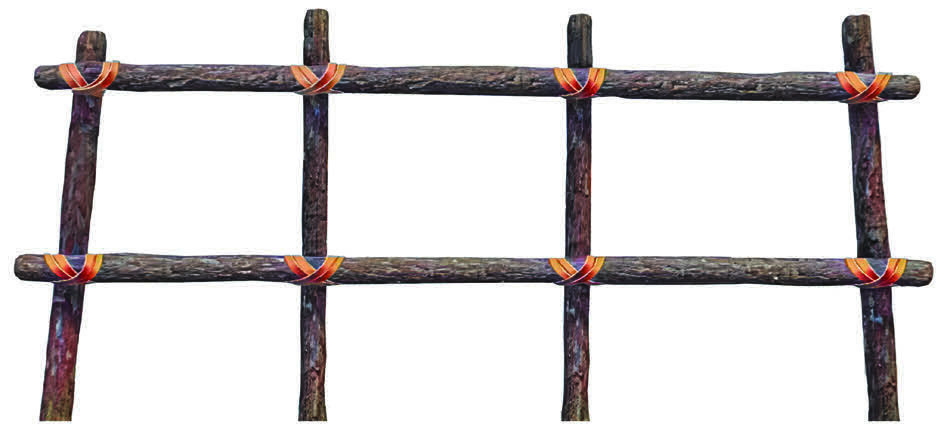
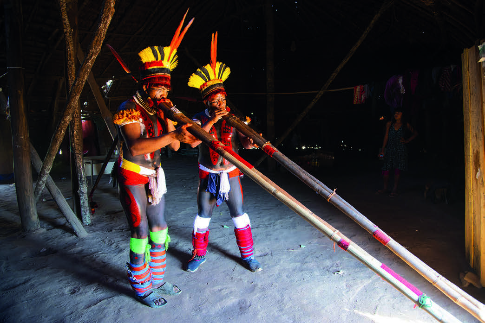

2)
CRIE NO CADERNO UM COLAR PENSANDO EM UM PADRÃO A SER REPETIDO.
QUAIS FORMAS GEOMÉTRICAS E OBJETOS VOCÊ USARIA?
Resposta pessoal.
3)
JUNTE-SE A UM COLEGA E ANALISE O PADRÃO QUE ELE CONSTRUIU.
Resposta pessoal.
FORMAS GEOMÉTRICAS
A CULTURA INDÍGENA APRESENTA UMA RIQUEZA DE FORMAS GEOMÉTRICAS EM PINTURAS CORPORAIS, NOS ADEREÇOS E NO ARTESANATO.
OBSERVE ESTAS ESTRUTURAS DE MADEIRA, UTILIZADAS NAS CONSTRUÇÕES DE ALGUNS POVOS INDÍGENAS.

USANDO TRONCOS E CIPÓS, OS INDÍGENAS CONSTROEM SUAS MORADIAS.
REPRESENTAÇÃO ESQUEMÁTICA DE UMA ESTRUTURA DE CONSTRUÇÃO INDÍGENA UTILIZANDO MADEIRA E CIPÓ.
IMAGEM SEM ESCALA; CORES-FANTASIA.
SOUD
A MAIOR PARTE DAS ALDEIAS UTILIZA CIPÓS NA AMARRAÇÃO DAS ESTRUTURAS DE MADEIRA.
CORTES SÃO FEITOS NAS MADEIRAS DE MANEIRA A CONSEGUIR ENCAIXÁ-LOS.
O USO DESSA TÉCNICA TAMBÉM PODE SER VISTO EM ALGUMAS CONSTRUÇÕES NAS CIDADES.
OBSERVE NA FOTOGRAFIA A SEGUIR UM INSTRUMENTO MUSICAL, A FLAUTA URUÁ, PRODUZIDA POR ALGUNS POVOS INDÍGENAS DO XINGU.
ELA É USADA EM RITUAIS COMO O KUARUP.

FORMAS GEOMÉTRICAS NA FLAUTA URUÁ, TOCADA POR INDÍGENAS DO POVO MEHINAKO.
MATO GROSSO,
FOTOGRAFIA DE 2022.
LUCIOLA ZVARICK/PULSAR IMAGENS
No tópico “Formas geométricas”, se julgar conveniente, explique aos estudantes que muito do conhecimento geométrico dos indígenas foi adquirido por meio de herança cultural, de interação com a natureza e com seus pares, o que implica interpretação da Geometria segundo sua concepção de mundo.
É interessante levar essa informação ao conhecimento dos estudantes e ressaltar a riqueza desses saberes, de maneira a valorizar e respeitar essa cultura.
SUGESTÃO PARA O PROFESSOR
Para ampliar os conhecimentos sobre Geometria na cultura indígena, sugerimos ler o artigo Etnomatemática indígena: Geometria (disponível em: https://portal.unisepe.com.br/unifia/wp-content/uploads/sites/10001/2023/03/ETNOMATEM%C3%81TICA-IND%C3%8DGENA-GEOMETRIA-p%C3%A1g-63-a-67.pdf, acesso em: 21 maio 2024).
Nesse artigo, é possível analisar a literatura e observar como são empregadas as formas geométricas nos artesanatos, nas pinturas e em tudo o que envolve a cultura indígena.